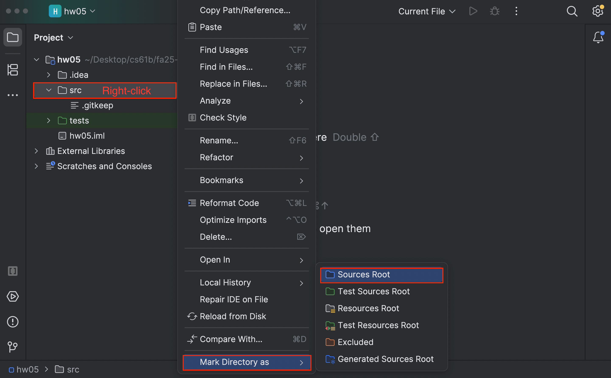
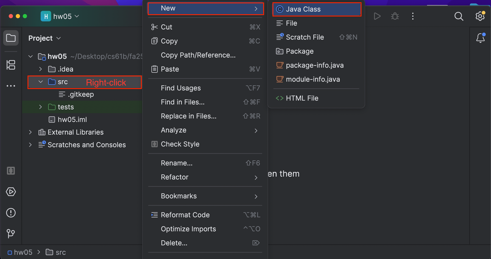

Homework 5: Stacks
Lectures needed for this homework: Lecture 4 (SLLists, Nested Classes, Sentinel Nodes), or Chapter 4 of the textbook.
Reminder that you must follow the style guide, and that you can check style yourself in IntelliJ as many times as you want.
Setup
Follow the Assignment Workflow Guide to get started with this assignment. This starter code is in the hw05 folder.
For this assignment, we’ve only provided tests. You can find these tests in TestStack.java.
The tests are initially commented out. You can uncomment them once you’re ready to run them.
To get started, create a new class called Stack.java by following these steps:
-
Right-click the
srcfolder.Select “Mark Directory as” (you may need to scroll down in the menu).
Click “Sources Root.”

-
Right-click the
srcfolder.Select “New” → “Java Class.”
Enter
Stackas the name of the class.
Task 1: Create a Stack
Your Stack should have four operations:
void push(int x): puts x on top of the stack.int pop(): removes and returns the top item on the stack.int size(): returns the number of items on the stack.int sum(): compute the sum of the numbers on the stack.
Your Stack should use a linked list with a sentinel node. Your push, pop, and size operations should be very fast, i.e. the runtime of these methods should not get longer as the Stack grows. There is no restriction on the runtime for sum. You may assume that the stack is never empty when pop or size is called, i.e. our tests will not check this case.
For a brief video showing a the behavior of the push and pop methods, see this video.
As an example, consider the code below:
Stack s = new Stack();
s.push(1); // s is 1
s.push(10); // s is 10 on top of 1
s.push(100); // s is 100 on top, 10 in the middle, 1 on the bottom
s.size(); // returns 3
s.pop(); // removes and returns 100 (top item)
// also, s is now 10 on top, 1 on bottom
s.sum(); // returns 10 + 1 = 11
s.size(); // returns 2
Any kind of iteration over your linked list will result in runtime that grows with the length of the
Stack.
A data structure operation whose runtime does not depend on the size of the data structure is often called “constant time”.
There are no restrictions on whether your methods are iterative or recursive. All instance variables must be private!
Task 2: Stack Client
In the src folder, create a new class StackClient. It should have a single method:
public static Stack flipped(Stack s): Returns a version of the stack that is flipped.
For example if we call:
Stack s = new Stack();
s.push(1); // s is 1
s.push(10); // s is 10 on top of 1
s.push(100); // s is 100 on top, 10 in the middle, 1 on the bottom
Stack f = flipped(s); // f is 1 on top, 10 in the middle, 100 on the bottom.
There are no restrictions on whether flipped is recursive, iterative, destructive, or non-destructive.
Submission
Graded files that you need to modify:
Stack.javaStackClient.java
You must follow the style guide for Stack.java and StackClient.java. You can check style yourself in IntelliJ as many times as you want.
Follow the Assignment Workflow Guide to submit. You can submit as many times as you want. The score you see on Gradescope is your final score for this homework.
Optional Task (ungraded)
As an optional exercise, write code that uses System.currentTimeMillis() to verify that your push and pop operations are constant time. Use System.currentTimeMillis() to verify that your sum operation takes time proportional to the list.
For example, the code below prints out the total time needed to add the numbers 1 through 1,000,000 to an initially empty ArrayList.
int N = 1000000;
long startMs = System.currentTimeMillis();
ArrayList<Integer> list = new ArrayList<>(); // avoid resizes
for (int i = 1; i <= N; i += 1) {
list.add(i);
}
long endMs = System.currentTimeMillis();
System.out.println("Took " + endMs - startMs + " millliseconds.");